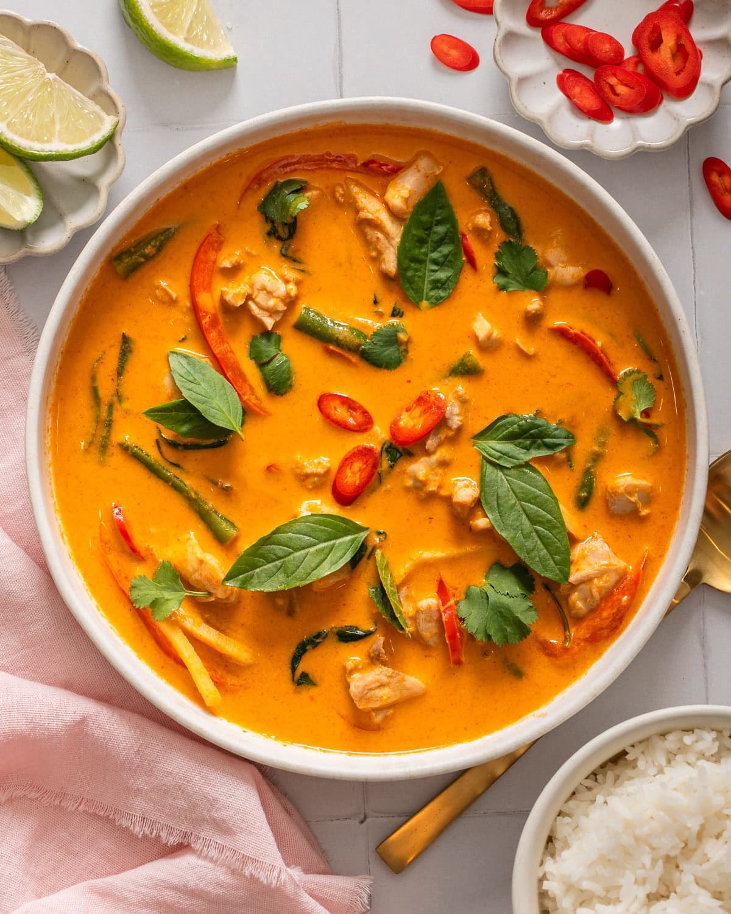

Most Popular Foods in the World
Discover the most popular foods in the world!
#8 Most Popular Food in the World

Curry is a flavorful dish popular across many parts of Asia, especially India, Thailand, and Japan.
It is made using a mix of spices, sauces, and ingredients like meat, vegetables, or lentils, creating a rich and aromatic meal.
People love curry for its bold flavors and variety. From mild and creamy to spicy and intense, there is a type of curry for everyone.
Fun Fact: The word "curry" was popularised by the British, but the dishes come from many different cultures!